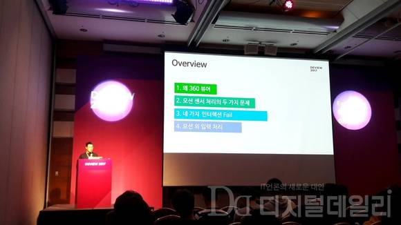
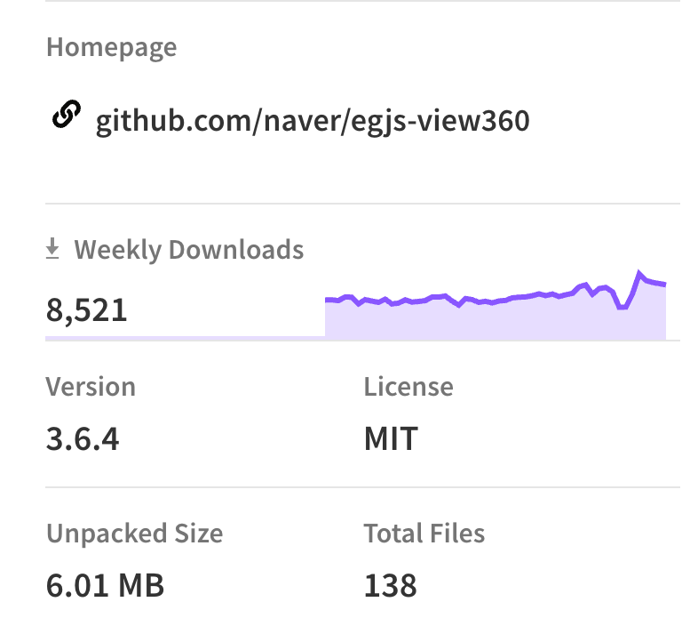
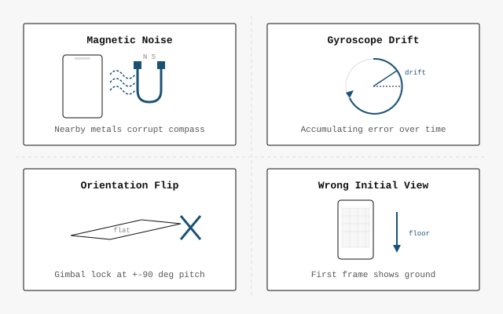
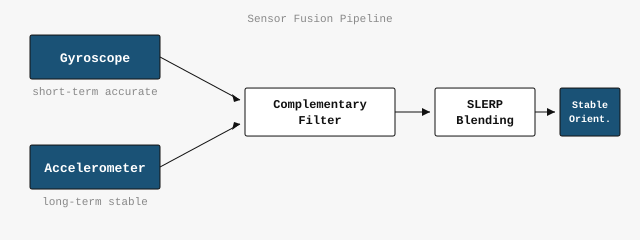
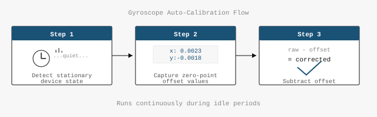
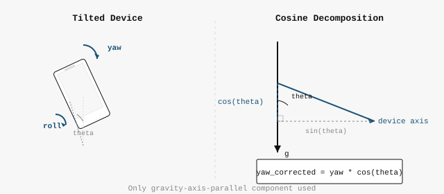
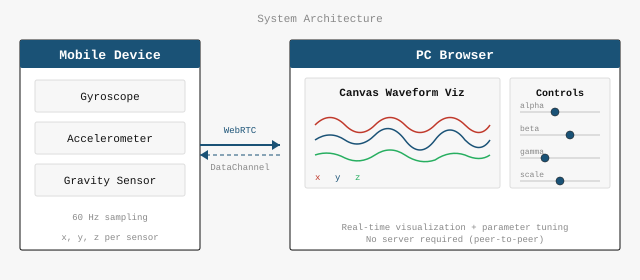

View360: 360° Viewer & Sensor Fusion Engine
From internal library to 531-star open source project adopted by Amazon.com and Hyundai. Published NPM package, built demo pages and API docs, presented at DEVIEW 2017.
Enterprise Adoption
Amazon.com adopted View360 for their automotive showroom product pages, and Hyundai Motor Company integrated it for vehicle interior views.

Key Metrics
Conference Talks & External Advocacy

- DEVIEW 2017 — NAVER's flagship developer conference, 200+ attendees. Deep dive into WebGL rendering pipeline, sensor fusion algorithms, and gyroscope calibration techniques. Press coverage →
- NAVER Open Source Seminar — Internal-to-external open source process
- WebRTC Competition — 2nd place with sensor telemetry visualization tool
NPM Publishing & Package Design
Designed the package API for external consumption — clean entry points, TypeScript definitions,
and tree-shakable ES module builds. Published to NPM under @egjs/view360.

Demo Page & Documentation
Built an interactive demo site at naver.github.io/egjs-view360 with live examples for equirectangular, cubemap, and partial panorama projections. API reference generated from JSDoc annotations.

The Journey
-
2016 Q1Internal POC development begins
-
2016 Q3Production deployment to NAVER Blog, Post, TV
-
2016 Q4Open source release (GitHub + NPM)
-
2017 Q1Demo page & API documentation site
-
2017 Q2DEVIEW 2017 presentation (200+ attendees)
-
2017 Q3Axes input library extracted as separate package
-
2017 Q4GitHub 100★ milestone
-
2018 Q1Adopted by Amazon.com (automotive showroom)
-
2018 Q2Adopted by Hyundai Motor Company
-
Current531★ GitHub, 5K+ weekly NPM downloads
DEVIEW 2017 — "360° Viewer from Scratch" (English translation)
Links

NAVER services (Blog, Post, TV, Realestate) needed 360° media support. I designed and built a WebGL renderer and custom sensor fusion from scratch to solve critical mobile UX failures in existing solutions.
Problem
Existing web-based 360° solutions had critical mobile UX failures:

- Magnetic sensor noise — The browser's
deviceorientationevent includes magnetometer data. Nearby electronics or metal objects caused the camera to drift randomly. - Uncalibrated gyroscopes — Some Android devices ship with poorly calibrated gyroscopes, causing continuous slow rotation even when perfectly still.
- Broken orientation when lying down — VR-style direct mapping of device angles to camera angles breaks when the user holds the phone at unusual angles.
- Wrong initial view — Loading the viewer while the phone is on a table always shows the floor; loading while lying down shows the ceiling.
Solution
1. Custom Sensor Fusion
Replaced the high-level deviceorientation API (which includes magnetometer noise) with a custom sensor fusion implementation.
Using raw gyroscope and accelerometer data from the devicemotion API, I implemented a complementary filter that:

- Trusts the gyroscope for short-term responsiveness (smooth, low-latency rotation tracking)
- Trusts the accelerometer for long-term stability (absolute gravity reference, no accumulated drift)
- Blends both using quaternion spherical interpolation (SLERP) to avoid gimbal lock artifacts
2. Gyroscope Zero-Point Calibration

Detected device-stationary moments by observing gaps in deviceorientation events (Android stops firing the event when the device is still).
During these quiet periods, the current gyroscope reading is captured as the zero-point offset and subtracted from subsequent readings — eliminating factory calibration errors.
3. Relative Rotation System
Instead of directly mapping device orientation to camera angles, I track frame-to-frame rotation changes in the device's own coordinate system. This means the user's physical posture — sitting, lying down, or tilting — doesn't matter. Only the relative device movement drives the camera.
4. Cosine Correction for Tilted Body Rotation

When a user rotates their body while holding the phone at an angle, the intended rotation gets split across the device's yaw and roll axes. I added cosine-weighted decomposition: extracting only the gravity-axis-parallel component of both yaw and roll changes, so the sum correctly represents the user's intended rotation regardless of tilt.
5. Reusable Input Library (Axes)
Extracted all input handling (touch swipe, mouse drag, keyboard, pinch zoom, device motion) into a separate library called Axes. It defines N-dimensional value axes with configurable ranges, circular wrapping, bounce padding, and pluggable input types — reusable for any interactive component.
Patent

Method for Visualizing Subject Information of Image (Granted, 2019)
Derived from View360 development — 360° image object detection with radar-style bird's-eye minimap for showing object positions.
Originated from a NAVER Hackday 1st place win.
Key Metrics
Links
Built a real-time WebRTC telemetry viewer to debug motion sensor fusion at 60fps. Mobile sensor data streams to a PC for live waveform visualization and parameter tuning.
Problem
- No way to visually inspect mobile sensor output in real time
console.logcannot reveal 60fps drift patterns or subtle calibration errors- Parameter change → build → device test cycle was too slow for iterative tuning
Solution

- WebRTC DataChannel for real-time mobile → PC sensor data transmission
- Canvas-based waveform visualization showing gyro, gravity, and fusion result channels simultaneously
- Long-duration accumulation graph for detecting slow drift patterns
- Live parameter adjustment without rebuild cycle
Why This Matters
Real-time sensor data visualization for engineering decisions directly maps to satellite telemetry monitoring, autonomous system simulation debugging, and launch data visualization at companies like Blue Origin and Anduril.